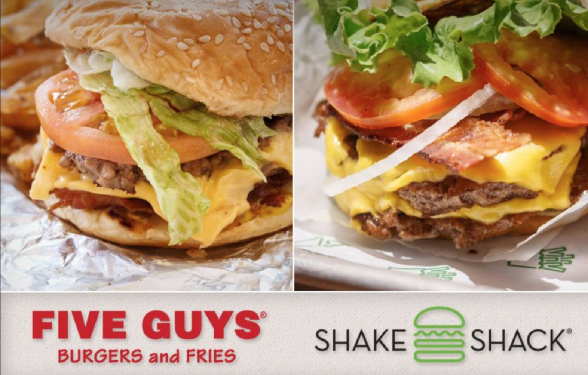
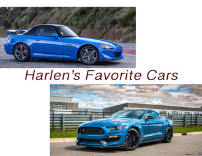

Which is the best Burger? Would you choose the Shack or Five Guys? This is quite a serious question. I need to do scientific tests on which burger restaurant is better.
My favorite cars are the Honda S2000 and the S550 Shelby GT350. I like the S2000 because of it's light handling characteristics. I like the GT350 because of the roar of the flat plane V8.
